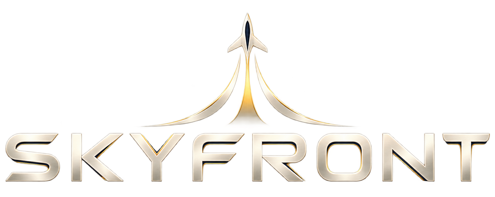

RE;light
The project-wide identity reference, consolidated from the existing Education and Hub design system. It defines the logo variants, core colors, typography and usage rules for consistent project materials.
The mark
Use the semicolon as the signature detail. Keep the wordmark intact and give it clear space on every surface.

Approved compact mark · doorway and path
Use this exact mark for icons and game branding. The empty doorway and winged game mark are rejected and archived; never substitute them.

Selected signature illustration · the same image now anchors the Education homepage hero.
Relight Skyfront
The game edition shares the parent palette and visual finish, with its own independent aviation logo.

Game edition · use alongside the approved RE;light identityColor system
Dark navy carries the brand. Ivory and cream open the page; gold marks the semicolon and key emphasis. Blue is a supporting interaction color.
Typography
Use LINE Seed Sans TH across Thai and Latin copy. Keep hierarchy clear, line lengths comfortable and emphasis restrained.
รู้ทันบุหรี่ไฟฟ้า
Thai and English wordmark sample.
Designed for clear Thai and Latin text on a dark surface.
Use it consistently
These rules keep the identity recognizable across the film, web, exhibition and project materials.
Write the display mark as RE;light. Keep the semicolon gold. Do not substitute punctuation or remove the detail.
Use the navy wordmark on cream or paper, and the ivory wordmark on navy. Use deep gold for small text on light surfaces.
Keep clear space around the mark at least equal to the height of its lowercase “l”. Never stretch, outline, shadow or place it over busy imagery.